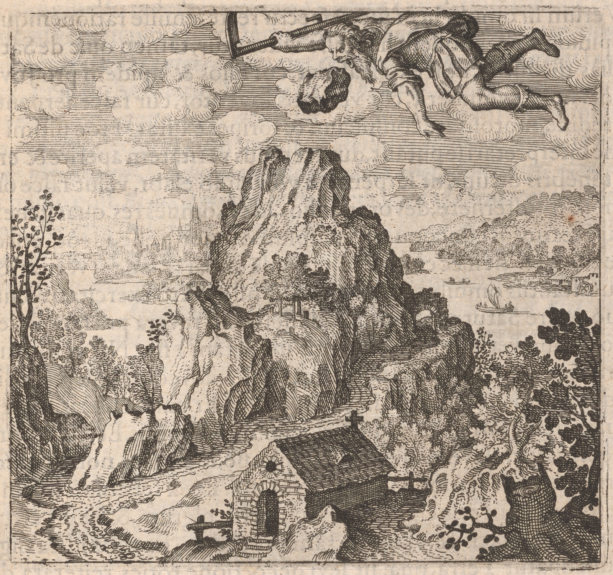

41057
EmblemeEmblem 12. Of the Secrets of Nature.
The Stone, which SaturneSaturn vomited up, being devoured instead
of his SonneSon jupiterJupiter, is placed in Helicon as a monument to men.
57
Emblema XII. De secretis Naturæae.
Lapis, quem Saturnus, pro Jove filio devoratum, evomuit,
Pro monumento in Helicone mortalibus est positus.
56
FUGA XII. in 2. suprà.
Der Stein / welchen Saturnus vor Jovem seinen Sohn
gefressen / außgespeyet / ist den zur Menschen Gedächtnuß
auff den Berg Heliconem gesetzet.

EpigrammeEpigram 12.
Know would you why the Poets soeso recount
The fame of Helicon, the Muses mount?
That monumentallmonumental stone is plac'dplaced thereon,
Which SaturneSaturn gorg'dgorged instead of Jove his SonneSon.
Be wise, the sense agrees not with the Sound,
For Saturn's Stone in Chymistry is found.
Epigramma XII.
Nosse cupis causam, tot cur Helicona poëtæae
Dicant, quódque ejus cuique petendus apex?
Est lapis in summo, monumentum, vertice postus,
Pro Jove deglutiit quem vomuítque pater.
Si ceu verba sonant rem captas, mens tibi læaeva est,
Namque est Saturni Chemicus ille lapis.
XII. Epigrammatis Latini versio Germanica.
So du woltst wissen / warumb die Poeten offt thun gedencken /
Daß man nach dem Helicon all sein Begierd sol lencken /
Es ist der Stein zum Gedächtnüß da berühmet weit/
Welchen Saturnus fraß vor Jove und widerspeyt /
Ob du wirst sehen nur auff der Wortern gethön / bistu nicht klug/
Dann daß der Stein Chymisch sey gewesen / ist klar genug.
42058
The Allegory of SaturneSaturn weewe find to be taken diversdiverse wayesways: for the Astro=
nomers repute him the highest of the PlanettsPlanets in order; the young students
of Chymistry the meanest of metallsmetals, namely lead: The heathen Poets: con=
ceivdconceived him to be the father of Jupiter, SonneSon of Cœlum; the Mythologists time.
But though all these may seem to have thought aright in their sense, yet -
they will not declare those things which are elswhereelsewhere spoken of SaturneSaturn, -
why heehe devoured and vomited up his sonnssons, and a stone instead of Jupiter,
why heehe is the discoverer of truth, why appearing with a siethscythe, a serpent, -
blacknesseblackness, morosity, and distorted feet? Herein the last thinkethink themselves to
interpret best, saying, that time revealesreveals and manifests truth, slides away as a Ser=
pent, cuts all things downedown with death as by a siethscythe, devouresdevours its children, that is,
all those things which it hathhas generated, digests hard stones, or cannot consume
them, and therefore dosdoes as it were vomit them up againeagain: These things doedo indeed
agree in part, but are not consonant to the truth of the thing, and all circum=
stances. But the exercises Philosophers doedo say, that SaturneSaturn is first in their
workework, which if heehe be really præsentpresent, they cannot erreerr, truth is discovered in
darknessedarkness; but there is nothing besides blacknesseblackness: wherefore they say in -
Turba Philosophorum, whatsoever colourcolor comes after blacknesseblackness is laudable:
and when you see your matter blackeblack, rejoycerejoice, because it is the beginingbeginning of -
the workework: And, when it is first blackeblack, weewe say it is the key of the workework, -
because it is not effected without blacknesseblackness, as the Rosary hathhas it, with Arnold,
and the Speculum: when you are operating, endeavourendeavor to obtaineobtain first a -
blackeblack colourcolor, and then will you be certainecertain that you putrefy, and proceed
the right way. And a little after: that blacknesseblackness is called earth, which is made
by light decoction soeso often repeated, till blacknesseblackness be most eminent: For -
this reason say the same, that SaturneSaturn possessethpossesses the earth, Mercury water, -
Jupiter aireair, Sol fire. SaturneSaturn therefore is blacknesseblackness, the discoverer of truth,
who followesfollows a stone instead of Jupiter. For blacknesseblackness, that is, a darkedark cloud
covers the stone as first, that it cannot be seen: Therefore saythsays MorienesMorienus -
every body without a soulesoul is darkedark and obscure: And Hermes: Take his head -
dissolve it with the Sharpest vinegar, or the urine of children, till it be made -
darkedark: This being performed heehe lives in putrefaction, and the darkedark clouds which
were upon him,
Discourse 12.
The Allegory of SaturneSaturn weewe find to be taken diversdiverse wayesways: for the Astro=
nomers repute him the highest of the PlanettsPlanets in order; the young students
of Chymistry the meanest of metallsmetals, namely lead: The heathen Poets: con=
ceivdconceived him to be the father of Jupiter, SonneSon of Cœlum; the Mythologists time.
But though all these may seem to have thought aright in their sense, yet -
they will not declare those things which are elswhereelsewhere spoken of SaturneSaturn, -
why heehe devoured and vomited up his sonnssons, and a stone instead of Jupiter,
why heehe is the discoverer of truth, why appearing with a siethscythe, a serpent, -
blacknesseblackness, morosity, and distorted feet? Herein the last thinkethink themselves to
interpret best, saying, that time revealesreveals and manifests truth, slides away as a Ser=
pent, cuts all things downedown with death as by a siethscythe, devouresdevours its children, that is,
all those things which it hathhas generated, digests hard stones, or cannot consume
them, and therefore dosdoes as it were vomit them up againeagain: These things doedo indeed
agree in part, but are not consonant to the truth of the thing, and all circum=
stances. But the exercises Philosophers doedo say, that SaturneSaturn is first in their
workework, which if heehe be really præsentpresent, they cannot erreerr, truth is discovered in
darknessedarkness; but there is nothing besides blacknesseblackness: wherefore they say in -
Turba Philosophorum, whatsoever colourcolor comes after blacknesseblackness is laudable:
and when you see your matter blackeblack, rejoycerejoice, because it is the beginingbeginning of -
the workework: And, when it is first blackeblack, weewe say it is the key of the workework, -
because it is not effected without blacknesseblackness, as the Rosary hathhas it, with Arnold,
and the Speculum: when you are operating, endeavourendeavor to obtaineobtain first a -
blackeblack colourcolor, and then will you be certainecertain that you putrefy, and proceed
the right way. And a little after: that blacknesseblackness is called earth, which is made
by light decoction soeso often repeated, till blacknesseblackness be most eminent: For -
this reason say the same, that SaturneSaturn possessethpossesses the earth, Mercury water, -
Jupiter aireair, Sol fire. SaturneSaturn therefore is blacknesseblackness, the discoverer of truth,
who followesfollows a stone instead of Jupiter. For blacknesseblackness, that is, a darkedark cloud
covers the stone as first, that it cannot be seen: Therefore saythsays MorienesMorienus -
every body without a soulesoul is darkedark and obscure: And Hermes: Take his head -
dissolve it with the Sharpest vinegar, or the urine of children, till it be made -
darkedark: This being performed heehe lives in putrefaction, and the darkedark clouds which
were upon him,
42058
Discourse 12.
and in his body, before heehe dyeddied, are returned. This stone is -
againeagain disgorged by SaturneSaturn, when it becomes white, and then is it settset upon -
the top of Helicon for a monument to men, as Hesiod writes: for whitenessewhiteness is
really comprehended under blacknesseblackness, which is drawnedrawn out of its bowellsbowels, that
is, out of the stomackestomach of SaturneSaturn. therefore saythsays Democritus; putrify TinneTin
with a peculiar ablution, draw its blacknesseblackness and obscurity from it, and the
whitenessewhiteness of it will appear. And in Turba it is saydsaid: JoyneJoin the dry with
the moist, that is, the blackeblack earth with its water, and coct, till it be whitened.
This Arnold in Novum lumen chapt. 4. excellently declares, saying; That -
moisture therefore which caused blacknesseblackness in decoction, ShewsShows itselfeitself to be -
dryeddried, when the white colourcolor begins to appear. And a little after: And -
my Master saydsaid to meeme, that that brunity ascended, because the whitenessewhiteness
was drawnedrawn out of the belly of its blacknesseblackness, as is saydsaid in Turba: For when -
you see it blackeblack know that the whitenessewhiteness of it is hidden in the bowellsbowels of the
blacknesseblackness first appearing. As the Same blacknesseblackness is called SaturneSaturn, soeso allsoalso -
Lead: Thereupon saythsays Agadimon in Turba: Coct your brassebrass, till the blacknesseblackness come forth,
which they call money, and mix the matters of your art, and you will find blacknesseblackness -
presently, which is the Philosophers lead, of which they have treated much in their -
books: Hitherto relates the saying of Emiganus, that the Splendor of SaturneSaturn ascending
into the aireair appears noeno otherwise than darkened. And of Plato in the Rosary; The
first way of governing SaturneSaturn is to putrefy and put it upon Sol: by which it is evident -
that the sense of the Philosophers, speaking of SaturneSaturn, is farrefar different from the
coḿoncommon acceptation. This SaturneSaturn generates Jupiter, that is, an obscure whitenessewhiteness, Jupiter
of Latona Diana, that is perfect whitenessewhiteness, and Apollo, that is, rednesseredness; and this is
the successive mutation of all perfect colourscolors: This Stone cast out by SaturneSaturn is
reported to be placed at the top of the mountainemountain as a monument to men, which
is a thing most true . . . . . . . . . . . .
againeagain disgorged by SaturneSaturn, when it becomes white, and then is it settset upon -
the top of Helicon for a monument to men, as Hesiod writes: for whitenessewhiteness is
really comprehended under blacknesseblackness, which is drawnedrawn out of its bowellsbowels, that
is, out of the stomackestomach of SaturneSaturn. therefore saythsays Democritus; putrify TinneTin
with a peculiar ablution, draw its blacknesseblackness and obscurity from it, and the
whitenessewhiteness of it will appear. And in Turba it is saydsaid: JoyneJoin the dry with
the moist, that is, the blackeblack earth with its water, and coct, till it be whitened.
This Arnold in Novum lumen chapt. 4. excellently declares, saying; That -
moisture therefore which caused blacknesseblackness in decoction, ShewsShows itselfeitself to be -
dryeddried, when the white colourcolor begins to appear. And a little after: And -
my Master saydsaid to meeme, that that brunity ascended, because the whitenessewhiteness
was drawnedrawn out of the belly of its blacknesseblackness, as is saydsaid in Turba: For when -
you see it blackeblack know that the whitenessewhiteness of it is hidden in the bowellsbowels of the
blacknesseblackness first appearing. As the Same blacknesseblackness is called SaturneSaturn, soeso allsoalso -
Lead: Thereupon saythsays Agadimon in Turba: Coct your brassebrass, till the blacknesseblackness come forth,
which they call money, and mix the matters of your art, and you will find blacknesseblackness -
presently, which is the Philosophers lead, of which they have treated much in their -
books: Hitherto relates the saying of Emiganus, that the Splendor of SaturneSaturn ascending
into the aireair appears noeno otherwise than darkened. And of Plato in the Rosary; The
first way of governing SaturneSaturn is to putrefy and put it upon Sol: by which it is evident -
that the sense of the Philosophers, speaking of SaturneSaturn, is farrefar different from the
coḿoncommon acceptation. This SaturneSaturn generates Jupiter, that is, an obscure whitenessewhiteness, Jupiter
of Latona Diana, that is perfect whitenessewhiteness, and Apollo, that is, rednesseredness; and this is
the successive mutation of all perfect colourscolors: This Stone cast out by SaturneSaturn is
reported to be placed at the top of the mountainemountain as a monument to men, which
is a thing most true . . . . . . . . . . . .
58
Saturni allegoriam diversimodè acceptam esse invenimus.
Astronomi enim ad planetarum in ordine summum; Chymiæae
tyrones ad metallorũmetallorum infimum, nempe plumbum retulerunt. PoëtęPoëtae
Ethnici pro Jovis patre, Cœoeli filio. Mythologi pro tẽporetempore habuerũthabuerunt.
Verùm hi omnes licèt suo respectu rectè sensisse rationémque suæae
opinionis probabilem habuisse videantur, tamen quæae de Saturno
aliàs dicuntur, non explicabunt, cur filios &et lapidem pro Jove de-
vorarit &et evomuerit, cur veritatis inventor, cur falce, serpente, ni-
gredine, morositate conspicuus &et loripes existat? Hoc ultimi opti-
mè interpretari se putant, dum tempus veritatem aperire &et eruere
è tenebris dicunt, ut serpentem volvendo elabi, velut falce omnia
morte prosternere, devorare filios, id est, omnes res, quas generârit,
lapides duros concoquere vel absumere non posse, ideóq;ideoque eos quasi
revomere. At hæaec conveniunt quidẽquidem ex parte, sed rei veritati &et cir-
cumstantiis omnib.omnibus non quadrant. Philos.Philosophi verò exercitati dicunt, in
suo opere Saturnum primò adesse, qui si revera præaesens sit, errari
non posse, veritatem in tenebris inventam esse; Nil verò existere
præaeter nigredinem: Unde dicunt: Quicunq;Quicunque color post nigredinem
advenerit, laudabilis est in turba philosphilosophorum. Et cùm videris materiam
tuam denigrari, gaude; quia principium est operis. Et, cùm primum
denigratur, clavem operis dicimus esse, quoniam non fit absq;absque ni-
gredine, ut Rosarius habet ex Arnoldo. Et ex speculo; cùm in ope-
re fueris, fac ut principio habeas colorem nigrum &et tunc certus eris
quod putrefacis &et viam rectam procedis. Et mox: Ista nigredo
nuncupatur Terra, quæae fit levi decoctione toties reiterata, donec
nigredo super emineat. Hinc iidem dicunt, quod Saturnus teneat
terram, Mercurius aquam, Jupiter aërem, Sol ignem. Nigredo itaq,itaque
Saturnus est, veritatis index, qui lapidem pro Jove devorat. Nigredo
enim, hoc est, fusca nubes lapidem tegit primò, ne videri possit. Inde
Morienes, omne corpus, inquit, cùm anima caruerit, tenebrosum
&et obscurum invenitur. Et Hermes: accipe cerebrum ejus, aceto a-
cerrimo tere, vel urinâ puerorum, quousque obscuretur. Hoc pera-
cto vivit in putrefactione &et fuscæae nubes, quæae super ipsum fuerant
DISCURSUS XII.
Saturni allegoriam diversimodè acceptam esse invenimus.
Astronomi enim ad planetarum in ordine summum; Chymiæae
tyrones ad metallorũmetallorum infimum, nempe plumbum retulerunt. PoëtęPoëtae
Ethnici pro Jovis patre, Cœoeli filio. Mythologi pro tẽporetempore habuerũthabuerunt.
Verùm hi omnes licèt suo respectu rectè sensisse rationémque suæae
opinionis probabilem habuisse videantur, tamen quæae de Saturno
aliàs dicuntur, non explicabunt, cur filios &et lapidem pro Jove de-
vorarit &et evomuerit, cur veritatis inventor, cur falce, serpente, ni-
gredine, morositate conspicuus &et loripes existat? Hoc ultimi opti-
mè interpretari se putant, dum tempus veritatem aperire &et eruere
è tenebris dicunt, ut serpentem volvendo elabi, velut falce omnia
morte prosternere, devorare filios, id est, omnes res, quas generârit,
lapides duros concoquere vel absumere non posse, ideóq;ideoque eos quasi
revomere. At hæaec conveniunt quidẽquidem ex parte, sed rei veritati &et cir-
cumstantiis omnib.omnibus non quadrant. Philos.Philosophi verò exercitati dicunt, in
suo opere Saturnum primò adesse, qui si revera præaesens sit, errari
non posse, veritatem in tenebris inventam esse; Nil verò existere
præaeter nigredinem: Unde dicunt: Quicunq;Quicunque color post nigredinem
advenerit, laudabilis est in turba philosphilosophorum. Et cùm videris materiam
tuam denigrari, gaude; quia principium est operis. Et, cùm primum
denigratur, clavem operis dicimus esse, quoniam non fit absq;absque ni-
gredine, ut Rosarius habet ex Arnoldo. Et ex speculo; cùm in ope-
re fueris, fac ut principio habeas colorem nigrum &et tunc certus eris
quod putrefacis &et viam rectam procedis. Et mox: Ista nigredo
nuncupatur Terra, quæae fit levi decoctione toties reiterata, donec
nigredo super emineat. Hinc iidem dicunt, quod Saturnus teneat
terram, Mercurius aquam, Jupiter aërem, Sol ignem. Nigredo itaq,itaque
Saturnus est, veritatis index, qui lapidem pro Jove devorat. Nigredo
enim, hoc est, fusca nubes lapidem tegit primò, ne videri possit. Inde
Morienes, omne corpus, inquit, cùm anima caruerit, tenebrosum
&et obscurum invenitur. Et Hermes: accipe cerebrum ejus, aceto a-
cerrimo tere, vel urinâ puerorum, quousque obscuretur. Hoc pera-
cto vivit in putrefactione &et fuscæae nubes, quæae super ipsum fuerant
59
&et in suo corpore, antequam moreretur, revertuntur. Hic lapis ite-
rùm evomitur à Saturno cùm albescit, atq;atque tunc in Heliconis apice
statuitur pro monumento mortalib.mortalibus ut Hesiodus scribit: sub nigre-
dine enim albedo revera latet, quæae ex vẽtreventre ejus extrahitur, hoc est,
ex Saturni ventriculo. Hinc Democritus, Mundifica stãnũstannum cum præaecipua
ablutione, extrahe ab eo nigredinem ejus &et obscuritatem &et apparebit can-
dor ejus. Et in turba dicitur: Jungite siccum humido, id est, terram nigram
cum aqua sua, &et coquite, donec dealbetur. Id Arnoldus in novo lumine
cap.capite 4. optimè declarat cùm inquit: Humiditas ergo quæae curabat in de-
coctione nigredinem, se desiccatam ostendit, dum color albus incipit appare-
re: Et paulo post. Et dixit mihi magister meus, quod ista brunitas ascende-
bat, quod albedo extrahebatur à nigredinis ejus ventre, sicut in turba dicitur.
Cùm enim videris ipsum nigrum scito quod albedo ipsius in ventre nigredi-
nis primo apparentis occulta est. EadẽEadem nigredo ut Saturnus dicitur, sic &et
plumbum: Inde Agadimon in turba: Coquite æaes donec exeat nigredo,
quam nummum vocant, &et res artis nostræae bene miscete &et invenietis nigre-
dinem statim, quæae est plumbum sapientum, de quo sapientes in suis libris mul-
ta tractavere: Huc Emigani dictum spectat, quod Saturni splendor dum
scandit in aëra, non apparet, nisi tenebratus. Et Platonis in rosario; Primum
regimen Saturni est putrefacere &et soli imponere: Ex quib.quibus constat longè
aliam esse mentem Philosophorum: cùm de Saturno quid dicant,
quàm à vulgo accipiatur. Hic Saturnus generat JovẽJovem, id est, fuscam
albedinem, Jupiter ex Latona, Dianam, id est, perfectam albedinem,
&et Apollinem, id est, rubedinem; Et hæaec est colorum omnium per-
fectorum successiva permutatio: Hic lapis à Saturno ejectus pro
monumento positus dicitur mortalibus in montis cacumine, quod
verissimum est.
&et in suo corpore, antequam moreretur, revertuntur. Hic lapis ite-
rùm evomitur à Saturno cùm albescit, atq;atque tunc in Heliconis apice
statuitur pro monumento mortalib.mortalibus ut Hesiodus scribit: sub nigre-
dine enim albedo revera latet, quæae ex vẽtreventre ejus extrahitur, hoc est,
ex Saturni ventriculo. Hinc Democritus, Mundifica stãnũstannum cum præaecipua
ablutione, extrahe ab eo nigredinem ejus &et obscuritatem &et apparebit can-
dor ejus. Et in turba dicitur: Jungite siccum humido, id est, terram nigram
cum aqua sua, &et coquite, donec dealbetur. Id Arnoldus in novo lumine
cap.capite 4. optimè declarat cùm inquit: Humiditas ergo quæae curabat in de-
coctione nigredinem, se desiccatam ostendit, dum color albus incipit appare-
re: Et paulo post. Et dixit mihi magister meus, quod ista brunitas ascende-
bat, quod albedo extrahebatur à nigredinis ejus ventre, sicut in turba dicitur.
Cùm enim videris ipsum nigrum scito quod albedo ipsius in ventre nigredi-
nis primo apparentis occulta est. EadẽEadem nigredo ut Saturnus dicitur, sic &et
plumbum: Inde Agadimon in turba: Coquite æaes donec exeat nigredo,
quam nummum vocant, &et res artis nostræae bene miscete &et invenietis nigre-
dinem statim, quæae est plumbum sapientum, de quo sapientes in suis libris mul-
ta tractavere: Huc Emigani dictum spectat, quod Saturni splendor dum
scandit in aëra, non apparet, nisi tenebratus. Et Platonis in rosario; Primum
regimen Saturni est putrefacere &et soli imponere: Ex quib.quibus constat longè
aliam esse mentem Philosophorum: cùm de Saturno quid dicant,
quàm à vulgo accipiatur. Hic Saturnus generat JovẽJovem, id est, fuscam
albedinem, Jupiter ex Latona, Dianam, id est, perfectam albedinem,
&et Apollinem, id est, rubedinem; Et hæaec est colorum omnium per-
fectorum successiva permutatio: Hic lapis à Saturno ejectus pro
monumento positus dicitur mortalibus in montis cacumine, quod
verissimum est.
view: